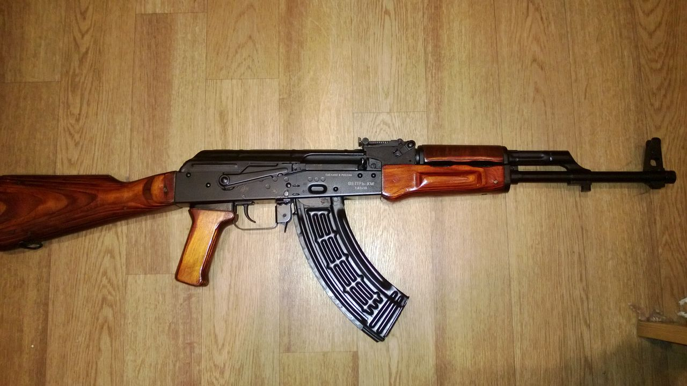
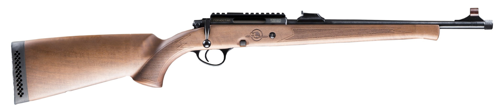

Список видов гражданского вооружения в игре "Escape from Tarkov"
- Карабины
- Пистолеты-пулеметы
- Дробовики
- Пистолеты
Карабины
Российский гражданский карабин ADAR 2-15 основанный на конструкции AR-15. Карабин производится в Санкт-Петербурге из израильских комплектующих с хромированными стволами от ООО «Молот оружие».

Карабин АК-545 производства Sureshot Armament Group, построенный на базе современных автоматов Калашникова.
ВПО-209 создан на базе известного автомата Калашникова (АКМ) и имеет идентичный вид, массу, габаритные размеры. Ударно-спусковой механизм куркового типа обеспечивает производство одиночных выстрелов и постановку на предохранитель флажкового типа. Питание ружья производится из отъемного магазина.

Самозарядный охотничий карабин калибра 7,62×39 мм, созданный на базе Автомата Калашникова (АКМ), имеет идентичный вид, массу, габаритные размеры. Предназначен для промысловой и любительской охоты на среднего и крупного зверя, а также спортивного использования.
Самозарядный охотничий карабин калибра 7,62x51 мм, созданный на базе Автомата Калашникова (АКМ), имеет идентичный вид, массу, габаритные размеры. Предназначен для промысловой и любительской охоты на среднего и крупного зверя, а также спортивного использования.
Молот ОП-СКС самозарядный охотничий карабин калибра 7,62×39 мм создан на базе известного самозарядного карабина Симонова (СКС) и имеет идентичный вид, массу, габаритные размеры. Карабин ОП-СКС предназначен для промысловой и любительской охоты на среднего и крупного зверя.
Советский самозарядный карабин конструкции Сергея Симонова под патрон 7.62х39, за рубежом также известен как СКС-45. Невероятно популярное в странах СНГ и на западе оружие, до сих пор состоящее на вооружении в отдельных странах в виде различных клонов и модификаций. Конкретно этот образец производства Тульского Оружейного Завода со складов длительного хранения, не успевший пройти процедуру приведения к "стандартам гражданского рынка"
Пистолеты
Дальнейшее развитие ПП "Кедр" под новый патрон 9x18ПММ, получивший название ПП-9 "Клин". Выпускался с 1996—2002 гг. для Министерства Внутренних Дел РФ.
Пистолет-пулемёт ПП-91 "Кедр", разработан в начале 90-х годов по заказу МВД и выпускаемый на Златоустовском машиностроительном заводе. Состоит на вооружении почти всех силовых структур РФ.
Самозарядный карабин Сайга-9 был разработан как гражданский вариант пистолета-пулемета ПП-19–01 «Витязь-СН». Карабин Сайга-9 предназначен для спортивно-тренировочной и развлекательной стрельбы.
Карабин для PCC, показывающий превосходные результаты уже "из коробки". Карабин разработан при участии бронзового призёра мира в Semi-Auto Rifle Вадима Михайлова. Точность, скорость, комфортность отдачи.
Дробовики
Remington Model 870 — помповое ружье, производимое "Remington Arms Company". Распространено по всему миру как спортивное, охотничье, или оружие для самообороны. Также, широко используется полицией и некоторыми армейскими подразделениями.
Mossberg 500 серии одно из самых известных и распространенных помповых ружей в мире. Защищает вашу лужайку перед домом с 1961 года.

Benelli M3 Super 90 — итальянский самозарядный дробовик производства Benelli, разработанный на основе конструкции ружей Benelli M1 и Benelli M2. Ружьё оснащено механизмом, сочетающим в себе инерционную автоматику с ручным перезаряжанием при помощи продольно подвижного цевья. Ружья Benelli демонстрируют превосходные баллистические характеристики, отделка и точная обработка деталей олицетворяют собой традиционный итальянский стиль.
Гладкоствольное многозарядное ружьё MP-133 с перезаряжанием цевьём, производства ИжМех. Надёжное и удобное оружие для охоты и самообороны. Уникально в своем роде благодаря наличию затворной задержки.
Гладкоствольное многозарядное ружьё MP-153, производства ИжМех. Надёжное и удобное оружие для охоты и самообороны.
Гладкоствольное многозарядное ружьё MP-155, производства концерна "Калашников".
MP-18 - легендарная советская одностволка. Это ружье прекрасно ведет себя при любых погодных условиях, поломок и отказов не выявлено.
Мечта охотника. Двуствольная классика, элегантная в своей простоте. Заряжается патронами 12 калибра.
МЦ-255-12 - это уникальное для Российского рынка револьверное ружье 12го калибра.
Полуавтоматический карабин 12 калибра со складывающимся прикладом, снабжён блокировкой ударно-спускового механизма, позволяющей вести стрельбу только с откинутым прикладом. Ствол укороченный, длиной 430 мм.
Охотничье одноствольное гладкоствольное ружьё 20 калибра с продольно скользящим затвором. В массах больше известное как "Смерть председателя" за свой компактный размер.
Болтовые винтовки

Болтовой карабин ВПО-215 предназначен для охоты на мелкого и среднего зверя, а также для любительской стрельбы.
Пистолеты
Автоматический пистолет Стечкина (АПС) — автоматический пистолет, разработанный в конце 1940-х — начале 1950-х годов конструктором И. Я. Стечкиным и принятый на вооружение Вооружённых Сил СССР в 1951 году, одновременно с пистолетом Макарова. АПС предназначен для вооружения офицеров, принимающих непосредственное участие в боевых действиях, а также для солдат и сержантов некоторых специальных подразделений.